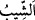
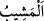
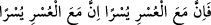

olan Temîm lüğatidir. Âsım ve Hamza üç yerde onu tercih etmiştir. Zamme (ötre) ile
olan ise Kureyş lügatidir. Diğer kırâat imamları da onu tercih etmiştir. Bu yüzden İbn
Ömer (r.a.) Rasûlullah (s.a.)’e bu kelimeyi fetha ile okuyunca Rasûlullah (s.a.) ona
zamme ile okutmuştur.
“Sonra güçsüzlüğün” cenin ve bebekte bulunan diğer bir zayıflığın “ardından kuvvet
veren” yaratan…
Bebeğe verilen bu kuvvet, bebeğe hareket etme, süt isteme ve ağlayarak kendisinden
ezâyı gidermesini sağlar.
Âlimlerden birisi şöyle demiştir: “Bâtında ilk varolan şey havl/güçtür. Sonra
uzuvlarda hissedilen kuvvettir. Yakalama ve alma sûretinde amelin zuhûr etmesi ise
kudrettir.
“Ve sonra” başka bir “kuvvetin” bülûğundan sonraki gençlik kuvvetinin “ardından”
başka bir “güçsüzlük” ihtiyarlık ve kocalık “ve ihtiyarlık” iyice yaşlılık ve ak saçlılık
“veren Allah’tır.”
“ ve “ saçın beyazlamasıdır.
Âyetteki “kuvvet/güç” ve “güçsüz/güçsüzlük” kelimelerinden herbiri önceki halden
başka bir hâle işârettir. Bu kelimeler nekre/belirsiz olarak zikredilmiştir. Nekre bir
kelime ne zaman ma‘rife olarak tekrar zikredilirse bununla önce geçen nekre kelime
kasdedilir. Aynı kelime nekre olarak tekrarlanırsa birincisinden başkası kastedilir. Bu
sebeple İbn Abbâs (r.a.) “ Elbette zorluğun yanında bir
kolaylık vardır. Gerçekten, zorlukla beraber bir kolaylık daha vardır.” (el-İnşirâh,
94/5-6) âyetleri hakkında “Bir zorluk iki kolaylığa asla üstün gelemez.” demiştir. İmam
Râğıb bu konunun mâhiyetini bu şekilde ortaya koymuş ve müfessirlerin önde gelenleri
de ona uymuştur.
et-Te’vîlâtü’n-Necmiyye’de der ki: “Sizi” başlangıçta “güçsüz” aklı bakımından
güçsüz “yaratan, sonra güçsüzlüğün ardından” delil ve huccetlerle akılda “kuvvet
veren ve sonra kuvvetin ardından” akıl kendisine ayak bağı olan kimselere îmanda
“güçsüzlük ve ihtiyarlık veren Allah’tır.” Aklın kendisine ayak bağı olduğu kimseleri
akıl, akıl ile idrâk edilen bilgilerin (ma‘kûlât) bağıyla bağlar. Onlar hakkında hevâ
sâikıyle vehm ve hayal karışmış bir düşünceyle düşünür. Bu yüzden de şüphelerin
karanlıklarına düşer, ayağı yoldan ve hak dinden kayar. Tâbi olma nuru ve şerîat nuru
olmadan aklî ilimleri (ma‘kûlât) öğrenmeye başlayanlardan çoğunun helâk olduğu gibi o
da helâk olur. Böyle kimseler tabîatın zulmetiyle şerîatı iptal edip hükümsüz hâle
getirmeye çalışırlar. “Onlar ağızlarıyla Allâh’ın nûrunu söndürmek istiyorlar.
Halbuki kâfirler istemeseler de Allah nûrunu tamamlayacaktır.” (es-Saff, 61/8).
Yine “Sizi güçsüz” talebde tereddüd ve şaşkınlık içerisinde güçsüz “yaratan, sonra
güçsüzlüğün ardından” sıdk ile talebde “kuvvet veren ve sonra” talebde “kuvvetin
ardından” ağır sözü taşıma konusunda “güçsüzlük ve ihtiyarlık veren Allah’tır.” Bu
ağır söz, Lâ ilâhe illallah sözünün hakîkatidir. Çünkü o, iki muhib arasında cereyan eden